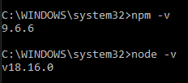

| Contenido | |
| Propósito del Software | Proceso de instalación |
| Video de instalación (Auxiliar) | Evidencia de instalación |
NPM es el sistema de gestión de paquetes por defecto para Node.js, un entorno de ejecución para JavaScript, bajo Artistic License 2.0. NPM se puede considerar como las siglas de Node Package Manager, es decir, gestor de paquetes de NodeJS, un entorno de ejecución multiplataforma para ejecutar Javascript no sólo en un navegador web (como se concibió originalmente) sino fuera de él, y poder utilizarlo en sistemas de escritorio o servidores web.
Para instalar NPM, deberás:
Si se requiere la extensión en Virtual Studio Code, sigue los siguientes pasos
En este video se explica el proceso de instalación de NPM
Esta es mi evidencia de instalación, tanto el listado de versiones de NPM y Node JS
Así también la evidencia de NPM como la extensión en VSC